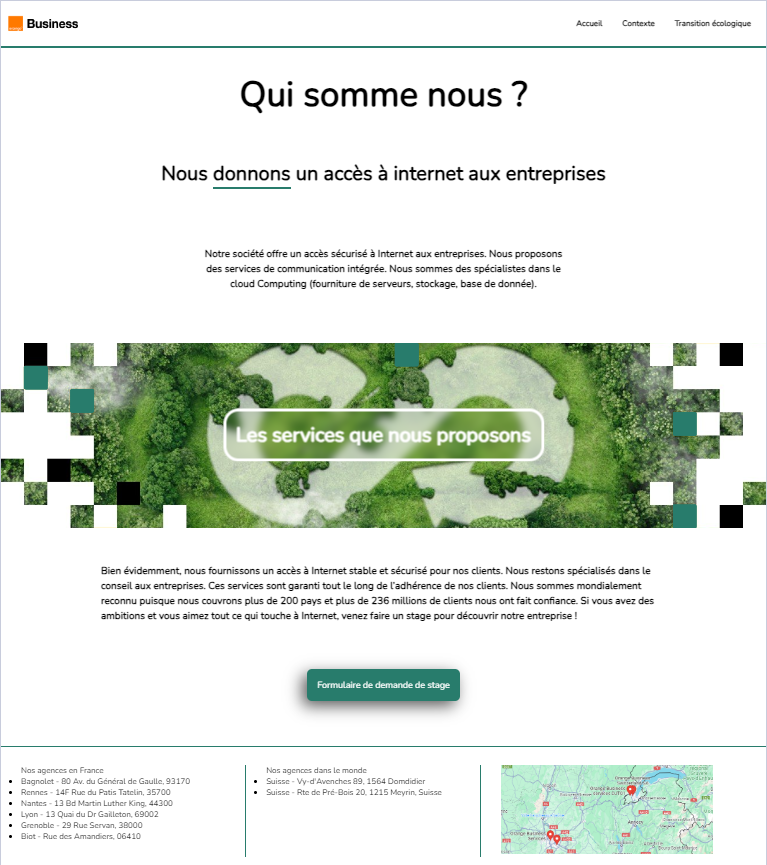

Ce projet s'est déroulé en novembre 2023. Nous avons utilisé HTML et CSS sur l'IDE VSCode. Les compétences évaluées incluaient la gestion de projet, le travail en équipe informatique et le développement d'applications.
Cette SAE a été réalisée en équipe de quatre, avec une répartition équitable des tâches.
L'objectif était de redessiner un site web pour le rendre adapté aux élèves de troisième.
Dans un premier temps, nous avons utilisé l'outil Whimsical pour créer le wireframe du site.
Ensuite, nous avons travaillé en parallèle en utilisant Git pour partager nos fichiers.

Illustration d'une des pages réalisées pour notre site